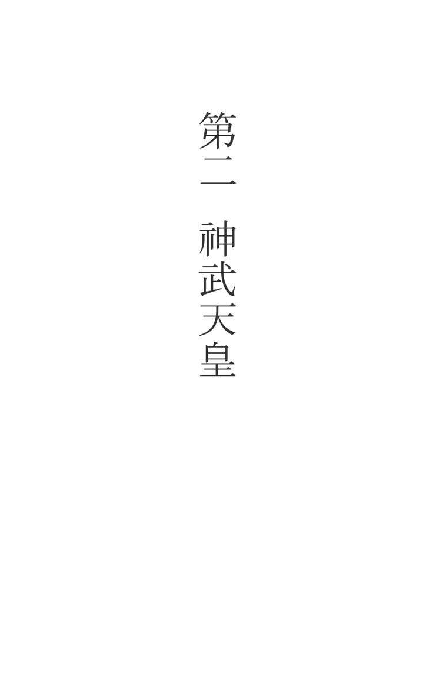
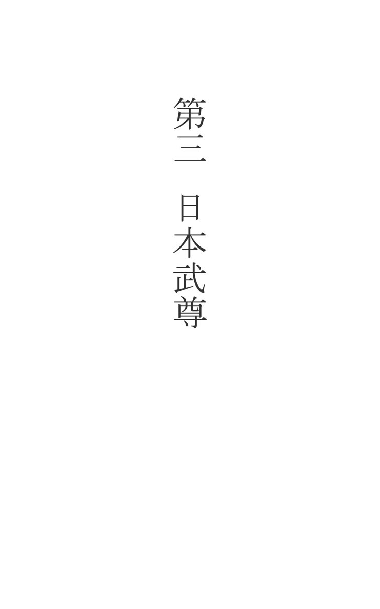

| 完全現代語訳 尋常小学校 国 史 第一巻 天照大神から和気清麻呂まで | |
| 前田慶一 | |
| (2016) | |
凡例
一、本書は、双書（シリーズ本）として後へ続く第一巻にあたります。
二、双書は、『尋常小学国史』 上・下巻（昭和二年文部省）を原文全文章を示すとともに全文章にわたり現代語訳をしています。
三、双書は、『尋常小学国史附図』 上・下巻（昭和十四年文部省）を完全収録しています。
四、本書第一巻は、全第一～五十三章のうち第一～十章までを解説しています。第十一章以降は、第二巻以降となります。
五、各章は、原文および現代語訳と附図から構成されています。読みやすいように括弧内に読み仮名や短い解説を加えました。
第二巻以降
十一 桓武天皇と坂上田村麻呂
十二 弘法大師
十三 菅原道真
十四 藤原氏の専横
十五 後三条天皇
十六 源義家
十七 平氏の勃興
十八 平重盛
十九 武家政治の起
二十 後鳥羽上皇
二十一 北条時宗
二十二 後醍醐天皇
二十三 楠木正成
二十四 新田義貞
二十五 北畠親房と楠木正行
二十六 菊池武光
二十七 足利氏の僭上
二十八 足利氏の衰微
二十九 北条氏康
三十 上杉謙信と武田信玄
三十一 毛利元就
三十二 後奈良天皇
三十三 織田信長
三十四 豊臣秀吉
三十五 豊臣秀吉（つづき）
三十六 徳川家康
三十七 徳川家康（つづき）
三十八 徳川家光
三十九 後光明天皇
四十 徳川光圀
四十一 大石良雄
四十二 新井白石
四十三 徳川吉宗
四十四 松平定信
四十五 本居宣長
四十六 高山彦九朗と蒲生君平
四十七 攘夷と開港
四十八 攘夷と開港（つづき）
四十九 孝明天皇
五十 武家政治の終
五十一 明治天皇
五十二 大正天皇
五十三 今上天皇の践祚
◆ 原 文 ◆
天皇陛下のご先祖を天照大神(あまてらすおおみかみ)と申す。大神は御德(おんとく)きはめて高き御方(おんかた)にて、はじめて稻(いね)・麥(むぎ)などを田畑(たはた)にうゑさせ、又（また）蠶(かいこ)をかはせて、萬民(ばんみん)をめぐみたまへり。
大神の御弟(おんおとうと)に素戔鳴尊(すさのおのみこと)と申す御方ありて、たびたびあらあらしき行(おこない)ありしが、大神はつねに尊(みこと)を愛して、之(これ)をとがめたまはざりき。しかるに尊、大神の機屋(はたや)をけがされしかば、大神つひにたへかねたまひて、天(あま)の岩屋(いわや)に入り、岩戸(いわと)をたてて其(そ)の中(なか)にかくれたまへり。
あまたの神々これを憂(うれ)へ、大神を出(いだ)したてまつらんため、岩戸の外にあつまり、八坂瓊曲玉(やさかにのまがたま)・八咫鏡(やたのかがみ)などを榊(さかき)の枝にかけ、神樂(かぐら)をはじめたり。其の時天鈿女命(あめのうずめのみこと)のまひの樣(さま)をかしかりしかば、神々の笑(わらい)の聲(こえ)は天地を動かすばかりなり。大神、これは何事(なにごと)ぞとあやしみたまひて、少し岩戸を開きたまひしかば、神々ただちに榊をさし出せしに、大神の御すがた其の枝にかけたる鏡にうつれり。大神いよいよいよふしぎにおぼしめして、少し戸より出でたまひしを、かたはらにかくれゐたる手力男命(たぢからをのみこと)、御手を取りて出したてまつり、神々聲をあげてよろこびあへり。
素戔鳴尊(すさのおのみこと)は神々に追はれて、出雲(いづも)にくだりたまへり。尊簸川(ひのかわ)の川上(かわかみ)にて八岐(やまた)の大蛇(おろち)を斬りて、人々をすくひたまふ。此の時大蛇の尾より一ふりの劔(つるぎ)を得(え)、これはふしぎの劔なりとて、大神にたてまつりたまへり。之を天叢雲劔(あめのむらくものつるぎ)と申す。
素戔鳴尊の御子(みこ)に大國主命(おおくにぬしのみこと)と申す御方(おんかた)ありて、出雲地方を平(たいら)げたまひしが、其の他の地方には、わるものどもなほ多かりき。大神は御孫瓊瓊杵尊(ににぎのみこと)をくだして、此の國ををさめしめんとおぼしめし、まづ使(つかい)をつかはして、大國主命の平げたまへる地方をたてまつらしめたまひしに、命(みこと)よろこびて其の仰(おおせ)にしたがひたまへり。大神、瓊瓊杵尊に向ひて告げたまはく「此の國は、わが子孫の王(きみ)たるべき地なり。汝(なんじ)皇孫(こうそん)ゆきてをさめよ。皇位(こうい)の盛(さかん)なること、天地(あめつち)と共にきはまりなかるべし。」と。萬世一系(ばんせいいっけい)の天皇をいただきて、いつの世までも動きなきわが國體(こくたい)の基(もとい)は、實(じつ)にここに定まれり。
大神はまた八坂瓊曲玉(やさかにのまがたま)・八咫鏡(やたのかがみ)・天叢雲劔(あめのむらくものつるぎ)を瓊瓊杵尊(ににぎのみこと)に授(さづ)けたまひき。之を三種(さんしゅ)の神器(じんぎ)といふ。尊は之を奉(ほう)じ、あまたの神々をしたがへて日向(ひゅうが)にくだりたまへり。これより神器は、御代々の天皇あひつたへて皇位(こうい)の御(み)しるしとしたまへり。
大神の神器を尊に授けたまひし時、「此(こ)の鏡をわれと思ひて、つねにあがめたてまつれ。」と仰せられたり。されば此の御鏡(みかがみ)を御神體(ごしんたい)として大神をまつれる伊勢(いせ)の皇大神宮(こうだいじんぐう)は、御代々の天皇及び國民(こくみん)の深くうやまひたてまつれる御宮(おんみや)なり。
◆ 現 代 語 訳 ◆
天皇陛下のご先祖様を、天照大神（あまてらすおおみかみ）と申し上げます。天照大神は非常に徳の高いお方でした。初めて稲や麦を田畑に植えさせたり蚕（かいこ）を飼わせたりして、すべての人々に恵みをお与えになりました。
天照大神の御弟に素戔嗚尊（すさのおのみこと）と申し上げる御方（おんかた）がいました。たびたび乱暴なことを仕出かしましたが、天照大神は素戔嗚尊を変わらず愛していたので、それをお咎（とが）めになることはありませんでした。しかし、素戔嗚尊が天照大神の〔神聖な〕機屋（はたや）を穢（けが）した時に、ついに耐えかねた天照大神は自ら天の岩屋に入ってその戸を閉ざし、中にお隠れになりました。
心を痛めた大勢の神々が天照大神をお出し申し上げようと岩屋の外に集まり、八坂瓊曲玉（やさかにのまがたま）・八咫鏡（やたのかがみ）などを榊（さかき）の枝に掛けて舞い始めました。その時の天鈿女命（あめのうずめみこと）の舞い方が面白かったので、神々の笑い声は天地を動かすほどでした。天照大神はこれは何事かと不思議にお思いになり少し岩戸をお開けになりました。そこで、神々はすぐに榊の枝を差し出しました。すると、天照大神のお姿が枝にかけた鏡に映りました。大神がますます不思議にお思いになって少し戸から身を乗り出されたその時に、そばに隠れていた手力男命(たぢからをのみこと)が、お手を取って外へお出し申し上げ、神々は声をあげて喜び合いました。
素戔嗚尊は、神々によって追放されて〔高天原から〕出雲（いずも：島根県東部）の地へおりになりました。素戔嗚尊は簸川（ひのかわ：島根県の斐伊川と思われる）の上流の地で八岐（やまた）の大蛇（おろち）を斬って、人々をお救いになりました。このとき大蛇の尾の中から一振りの剣を得たのですが、これは不思議な剣であるとお思いになって、天照大神に献上（けんじょう）なさいました。これを天叢雲劔（あめのむらくものつるぎ）と申します。
素戔嗚尊の御子（みこ）に大国主神（おおくにぬしのみこと）という御方がいて、出雲地方を平定なさいましたが、その地方にはまだ多くの悪者どもがいました。天照大神は、御孫の瓊瓊杵尊（ににぎのみこと）を〔高天原から〕降してこの国を治めさせようとお思いになり、まず使者を遣わして、大国主命の平定した地方を献上させようとなさいました。すると、大国主命はその仰せに喜んで従いなさったので、天照大神は瓊瓊杵尊に向かってお告げになりました。「この国は、我が子孫が王であるべき地です。皇孫（こうそん）であるおまえが行って治めなさい。皇位は天地と共に、いついつまでも栄え続けることでしょう。」（天壌無窮の神勅）万世一系の天皇を戴いていつの世までも変わることがない我が國體（こくたい）の基礎は、実にここに定まったのです。
天照大神はまた八坂瓊曲玉・八咫鏡・天叢雲劔を瓊瓊杵尊にお授けになりました。これを三種（さんしゅ）の神器（じんぎ）と言います。瓊瓊杵尊はこれを戴いて沢山の神々を従え、日向（ひゅうが：宮崎県）にお降りになりました。この時から神器を代々の天皇が継承し続けて天皇の位の御しるしとなさっているのです。
天照大神が神器を素戔嗚尊にお授けになられた時に、「この鏡を私だと思って、常に崇（あが）めたてまつりなさい。」（神鏡奉齋の神勅）と仰いました。そのため、天照大神をお祀りになる伊勢（いせ：三重県）の皇大神宮（こうだいじんぐう：伊勢神宮内宮のこと）の御神体は御鏡（みかがみ）であり、代々の天皇及び国民が深く敬い申し上げているのです。

◆ 原 文 ◆
瓊瓊杵尊(ににぎのみこと）より御二代をへて、神武天皇(じんむてんのう)の御時にいたるまでは、御代々日向(ひゅうが)にましましてわが國ををさめたまひしが、東の方には、なほわるものどもはびこりて、甚(はなは)ださわがしかりき。天皇は之を平げて、人民を安(やす)んぜんとおぼしめし、舟(ふな)いくさをひきゐて日向を發(はっ)し、大和(やまと)に向ひたまひ、多くの年月をへて浪速(なにわ)につきたまへり。
天皇河内(かわち)より大和に入らんとしたまひしに、わるものどものかしら長髓彦(ながすねひこ)といふもの勢(いきおい)強く、御軍(みいくさ)をふさぎて入れたてまつらず。よりて天皇道をかへて、紀伊(きい)より大和に進まんとしたまふ。其のあたりは、山高く谷深く道なきところも多かりしが、天皇は之をものともしたまはず、飛行(とびゆ)く烏(からす)をしるべとし、兵士をはげまし、道をひらかせて、つひに大和に入りたまへり。
かくて、しだいにわるものどもを平げ、ふたたび長髓彦を討(う)ちたまふ。しかるに長髓彦の手下のものども力のかぎり戰ひければ、御軍たやすく勝つこと能(あた)はざりき。時に一天(いってん)にはかにかきくもりて、雹(ひょう)降りいだし、いづくより飛來(とびきた)りしか、金色の鵄(とび)天皇の持ちたまへる御弓のさきにとまり、其の光の強くかがやきたるに、わるものどもは目くらみてまた戰ふこと能（あた）はず、つひに大いにやぶれ、長髓彦もついでころされたり。
やがて天皇は、宮を畝傍山(うねびやま)の東南橿原(かしはら)にたてて、はじめて御即位(ごそくい)の禮(れい)を行ひたまへり。此の年をわが國の紀元元年(きげんがんねん)とし、毎年二月十一日の紀元節(きげんせつ)は、此のめでたき日にあたれるがゆゑに、國民ひとしく之を祝ふなり。
天皇はまた御孝心(ごこうしん)ふかく、御先祖の神々を鳥見山(とみのやま)にまつりたまふ。かくて天皇は、天照大神の定めたまひしわが帝國（ていこく）の基(もとい)をいよいよ固くしたまひてかくれたまへり。其のかくれたまひし日にあたりて行はるる御祭は、毎年四月三日の神武天皇祭（じんむてんのうさい）なり。
◆ 現 代 語 訳 ◆
瓊瓊杵尊（ににぎのみこと）から御二代を経て神武（じんむ）天皇の時代に至るまでは、代々の御方は日向にいらっしゃって我が国をお治めになっていました。そして東国の方では、まだ悪者どもがはびこっていて、はなはだ穏やかでない状況でした。神武天皇はこれを平定して人民の生活を安泰にしようとお思いになり、軍船（いくさぶね）を率いて日向を出発して大和（やまと：奈良県）にお向かいになり、多くの年月を経て浪速（なにわ：大阪市東部）にお着きになりました。
神武天皇は河内（かわち：大阪府南東部）から大和に入ろうとなさいましたが、悪者どもの首領（しゅりょう）である長髓彦（ながすねひこ）という者の勢力が強く、御軍（みいくさ）を防いで入れさせません。そこで天皇は道を変えて、紀伊（きい：和歌山県）から大和に進もうとなさいました。そのあたりは、山は高く谷は深く道もないところも多くありましたが、天皇はこれをものともなされずに、飛んで行く烏[やたがらす]に道案内をしてもらい、兵士を励まして道を開かせて、ついに大和にお入りになりました。
こうして、次々に悪者どもを平定し、再び長髓彦をお討ちになりました。しかし長髓彦の手下の者どもは力の限り戦ったので、御軍は簡単には勝つことができませんでした。そのとき天が急にかき曇って雹（ひょう）が降り出し、どこから飛んで来たのか、金色の鳶（とび）が天皇のお持ちになっている弓の先にとまりました。その〔金色の〕光が強く輝いたので、悪者どもは目がくらんでもう戦うことができず、とうとう大敗することになり、長髓彦もほどなく殺されました。
やがて神武天皇は、宮殿を畝傍山（うねびやま：奈良県南部に位置する山）の東南の橿原（かしはら：奈良県中西部）に建てて、初めて御即位の礼を行われました。この年を我が国の紀元（きげん）元年（がんねん）として、毎年二月十一日の紀元節（きげんせつ）を国民全員が祝うのは、このめでたい日にあたっているからなのです。
神武天皇はまた孝行を尽くそうとするお心が深く、御先祖の神々を鳥見山（とみのやま）にお祀りになりました。こうして神武天皇は、天照大神がお定めになった我が帝国の土台をますます堅固なものとしてお亡くなりになりました。お亡くなりになった日にあたって行われる御祭が、毎年四月三日の神武天皇祭（じんむてんのうさい）です。

◆ 原 文 ◆
神武天皇大和にうつりたまひしより後は、天皇の御威光(ごいこう)おひおひ四方にひろがりしも、都を遠くはなれたる東西の國々には、わるものどもなほ少からず、時々そむきて、人民をなやましたり。
第十二代景行天皇(けいこうてんのう)の御代(みよ)に至り、九州の南の方にすめる熊襲(くまそ)そむきたれば、天皇、御子小碓尊(おうすみのみこと)をつかはして之を討たしめたまふ。尊は御生れつきくわつぱつにて、御力も強くましませしかば、此の頃御年(おんとし)わづかに十六なりしも、仰(おおせ)にしたがひて、ただちに九州に至りたまふ。熊襲のかしら川上(かわかみ)のたけるは、かくとも知らず、人々と共に酒を飮みてたのしみゐたり。尊は御髮(おんかみ)をとき、少女のすがたになりて、たけるに近づき、劔(つるぎ)をぬきて其の胸をさしたまへり。たけるはおどろきて、「日本一の強き御方かな。これよりは日本武(やまとたける)と名のりたまへ。」と申して、息(いき)たえたり。よりて尊は御名を改め、めでたく大和にかへりたまへり。
其の後、東の國の蝦夷(えぞ)そむきしかば、天皇また尊をして之を討たしめたまふ。尊は熊襲御征伐(ごせいばつ)のためにつかれたまひたれど、天皇の仰をうけて、いさみて都をたち、まづ伊勢に至りて皇大神宮を拜し、天叢雲劔(あめのむらくものつるぎ)をいただ
きて、東國に向ひたまへり。
尊の駿河(するが)に至りたまひし時、其の地のわるものども尊を欺(あざむ)きて、鹿(しか)がりせんとて野原の中にみちびきたてまつり、四方より草をやきたてて、尊を弑(しい)したてまつらんとせり。尊御劔をぬき草を薙(な)ぎはらひて、ふせぎたまひしに、わるものどもは、かへつておのがつけたる火にやかれて、ことごとくほろぼされたり。これより此の御劔を草薙劔(くさなぎのつるぎ)と申すこととなれり。尊これより軍を東に進めたまひしが、蝦夷どもは、みな御勢におそれ、弓矢をすてて降參せり。かくて尊は常陸（ひたち）地方に至り、國々を平げて、大和にかへりたまはんとせしが、途中にて病にかかり、つひにかくれたまへり。
尊はたふとき御身を以て、兵士と共になんぎをしのびたまひ、少年の御時より、西に東にわるものどもを討ちて、少しも御身をやすめたまふひまなくして、かくれたまひしなり。されど其の御てがらにより、遠方まで平ぎて、世の中よくをさまれり。尊の御子、後に至りて天皇の御位に即きたまふ。之を第十四代仲哀天皇(ちゅうあいてんのう)と申す。
◆ 現 代 語 訳 ◆
神武天皇が大和にお遷（うつ）りになった後、天皇の御威光（ごいこう）はだんだんと周囲に広がりました。しかし、都から遠く離れている東や西の国々には悪者どもがまだかなりいて、時々反逆（はんぎゃく）しては人民を苦しませていました。
第十二代の景行（けいこう）天皇の御代になって、九州の南方に住んでいる熊襲（くまそ）が背いたので、景行天皇は御子の小碓尊（おうすのみこと）を遣わして、これを（う）討たせなさいました。小碓尊は生まれつき活発で力も強くていらっしゃいましたので、この頃御年（おんとし）はわずかに十六歳でしたが、仰せに従ってただちに九州にご到着になりました。熊襲の首領（しゅりょう）の川上（かわかみ）のたけるは、そうとも知らず、人々と共に酒を飲んで楽しんでいました。小碓尊は髪をほどいて少女の姿に変装し、〔油断した〕たけるに近づいて、剣を抜いてその胸をお刺しになりました。たけるは驚いて、「日本一の強いお方であることだ。これよりは日本武（やまとたける）とお名乗りください」と言って、息絶えました。そこで小碓尊は名を日本武と改め、めでたく大和にお帰りになりました。
その後、東国の蝦夷（えぞ）が背いたので、天皇はまた日本武尊（やまとたけるのみこと）にこれを討たせなさいました。日本武尊は熊襲征伐のためにお疲れになっていましたが、天皇の仰せを受けて勇んで都を出発し、まず伊勢に至って皇大神宮（こうだいじんぐう）を拝し、天叢雲劔(あめのむらくものつるぎ)を戴いて東国にお向かいになりました。
日本武尊が駿河（するが：静岡県）にお着きになった時、その地の悪者どもが、鹿狩りをしようと日本武尊を欺（あざむ）いて、野原の中に誘導し申し上げました。四方から草を燃え立たせて、日本武尊を殺し申し上げようとしたのです。日本武尊は剣を抜いて草を薙（な）ぎ払い、火を防がれました。逆に悪者どもは自分がつけた火に焼かれて全滅しました。この時からこの御剣を草薙剣（くさなぎのつるぎ）と申し上げることになりました。日本武尊はここから軍を東に進めなさいましたが、蝦夷どもはみなその勢いを怖れ弓矢を捨てて降参しました。こうして日本武尊は常陸（ひたち：茨城県北東部）地方に至り、国々を平定しました。そして大和にお帰りになろうとしましたが、途中で病にかかり、とうとうお亡くなりになりました。
日本武尊は高貴な御身分でありながら兵士と共に苦難に耐え、少年の時から西に東に悪者どもを討伐してまわり、少しも御身をお休めになるもないまま、お亡くなりになりました。しかしその御手柄で、遠方までも平定され、世の中はよく治まりました。日本武尊の御子は、後になって天皇の御位にお即きになりました。これを第十四代・仲哀（ちゅうあい）天皇と申します。
◆ 原 文 ◆
仲哀天皇の皇后を神功皇后(じんぐうこうごう)と申し、御生れつき賢(かしこ)くををしくましませり。天皇の御代に熊襲またそむきしかば、天皇は、皇后と共に九州にみゆきして之を討ちたまひしが、いまだ平がざるうちにかくれたまへり。
此の頃朝鮮には、新羅(しらぎ)・百濟(くだら)・高麗(こま)の三國ありて、之を三韓(さんかん)といへり。中にも新羅は最も我が國に近く、且(かつ)その勢強かりき。されば皇后は、まづ新羅をしたがへなば、熊襲はおのづから平がんとおぼしめし、竹内宿禰(たけうちのすくね)とはかり、御みづから兵をひきゐて新羅を討ちたまふ。時に紀元八百六十年なり。
皇后は御出發(ごしゅっぱつ)の前、香椎(かしい)の海べに出で、御髮を解き海水にて洗ひたまひて、男の如くみづらといふ髮のふうにゆひ、人々に向ひたまひて、「われ今かりに男のすがたになりて軍をひきゐ、神々の御たすけと汝等(なんじら)の力とによりて新羅を討ちしたがへん。」と仰せられしに、竹内宿禰をはじめ一同つつしみて、「仰にしたがふべし。」と答へたてまつれり。
皇后舟いくさをひきゐて對馬(つしま)にわたり、それより新羅におしよせたまふ。軍船(いくさぶね)海にみちみちて、御勢すこぶる盛なりしかば、新羅王大(おお)いに恐れていはく、「東の方に日本といふ神國(しんこく)ありて、天皇といふすぐれたる君(きみ)いますと聞く。今來れるは、必ず日本の神兵(しんぺい)ならん。いかでかふせぎ得べき。」と。ただちに白旗(しらはた)をあげて降參(こうさん)し、皇后の御前にちかひて、「たとひ太陽(たいよう)西より出で、川の水さかさまに流るる時ありとも、毎年の貢(みつぎ)はおこたり申さじ。」といへり。やがて皇后凱旋(がいせん)したまひしが、其の後百濟・高麗の二國もまた我が國にしたがへり。
かくて、これより朝鮮は天皇の御德になびきしたがひ、熊襲もおのづから平げり。又第十五代應神天皇(おうじんてんのう)の御代に、王仁(わに)といふ學者(がくしゃ)など百濟より來りて學問(がくもん)をつたへ、機織(はたおり)・鍛冶(かじ)などの職人も、おひおひ渡り來りて、わが國ますます開けしは、全く神功皇后の御てがらに基(もと)づきしなり。
◆ 現 代 語 訳 ◆
仲哀（ちゅうあい）天皇の皇后を神功（じんぐう）皇后と申し上げます。生れつき賢くて勇ましい御方でいらっしゃいました。仲哀天皇の御代に熊襲（くまそ）がまた背（そむ）いたので、天皇は、神功皇后と共に九州に御幸（みゆき：天皇の外出）してこれをお討ちになりましたが、まだ平定しないうちにお亡くなりになってしまいました。
この頃朝鮮には、新羅（しらぎ）・百済（くだら）・高麗（こま）の三国があって、これを三韓（さんかん）と言いました。その中でも新羅は最も我が国に近く、かつ勢力が強かったのです。そこで神功皇后は、まず新羅を従属させたら熊襲は自然と鎮圧できるとお思いになり、竹内宿禰（たけうちのすくね）と相談のうえ、御自ら兵を率いて新羅をお討ちになりました。時に紀元八百六十年のことです。
神功皇后は御出発の前に香椎（かしい：福島県福島市）の海辺に出て、髪を解いて海水でお洗いになり、男のように美豆良（みづら）という髪型に結って人々に向かって仰っいました。「私は今、仮の姿として男装して軍を率い、神々のお助けとお前達の力とによって新羅を討ち従えるつもりだ。」竹内宿禰（たけうちのすくね）をはじめ一同は謹んで「仰せに従いましょう。」とお答え申し上げました。
神功皇后に率いられて対馬（つしま：長崎県の島）に渡った軍船は、そこから新羅に押し寄せなさいました。海いっぱいに浮かぶ軍船の勢いは非常に盛んでしたので、新羅の王は大変怖れて言いました。「東の方に日本という神国（しんこく）があって、天皇という優れた主君がいらっしゃると聞いている。今やって来たのは、きっと日本の神兵（しんぺい）であろう。どうして防ぐことができようか。」すぐに白旗をあげて降参し、神功皇后の前で「たとえ太陽が西から出て、川の水が逆さまに流れる時があっても、毎年の貢ぎ物は怠（おこた）らないようにしましょう。」と誓いました。やがて神功皇后は凱旋（がいせん）なさいましたが、その後、百済・高麗の二国もまた我が国に従いました。
こうして、この時から朝鮮は天皇の御徳になびいて従い、熊襲もおのずと平定されました。また第十五代・応神（おうじん）天皇の御代に、王仁（わに）という学者などが百済より来て学問を伝え、機織（はたおり）・鍛冶（かじ）などの職人も次々と渡来して、我が国の開化がますます進んでいきました。これらはすべて、神功皇后の御手柄（おてがら）に基づいたものなのです。
◆ 原 文 ◆
第十六代仁德天皇(にんとくてんのう)は應神天皇の御子にして、御なさけ深く、常に人民をあはれみたまへり。天皇は都を難波(なにわ)にさだめたまひしが、皇居(こうきょ)はきはめて質素(しっそ)なる御つくりなりき。天皇あり日、高き御殿(ごてん)にのぼりて、四方をのぞみたまひしに、村々より立つかまどの煙(けむり)少かりしかば、かくかまどの煙の少きは、五穀(ごこく)みのらずして、食物の足らざるためならん。都近きところすらかくの如くなれば、遠き國々にては、人々いかに苦しみ居るならんとおぼしめし、勅(みことのり)して、三年の間税ををさむることを免(めん)じたまへり。されば皇居はしだいにあれ損(そん)ずれども、御心にもかけたまはず、御衣(ぎょい)すら新(あらた)にはつくらしめたまはざりき。
そのうち豐年(ほうねん)うちつづきて、人民皆ゆたかになり、村々の煙も盛に立ちのぼりたれば、天皇これを見たまひて、人民の富めるをよろこびたまひ、「われすでに富(と)めり。」と仰せられたり。人民は皇居のあれ損じたるをつたへ聞きて、税ををさめ又新(あらた)に皇居を造りたてまつらんことを願ひ出でたれども天皇は之をゆるしたまはざりき。されどなほしきりに願ひたてまつりたれば、さらに三年の後に至り、はじめて御ゆるしありたり。人民よろこびいさみて、われさきにとはせ集り、日夜(にちや)工事にはげみしかば、皇居たちまちうるはしくできあがれり。
天皇はなほ人民のためをはかりたまひ、堤(つつみ)をきづかせ、池をほらせなどして、農業をすすめたまひしかば、人々皆ふかく天皇の御恩(ごおん)に感じたてまつり、おのおの其の業をたのしみて、世の中よくをさまれり。
◆ 現 代 語 訳 ◆
第十六代・仁徳（にんとく）天皇は応神天皇の御子であり、御情け深く、常に人民を慈（いつく）しんでいらっしゃいました。天皇は、都を難波（なにわ：大阪市付近）にお定めになりましたが、皇居はきわめて質素な造りでした。ある日、天皇が高い御殿に登って四方を展望なさったところ、村々から立ちのぼるかまどの〔炊事（すいじ）の〕煙が少なかったのです。天皇は、「こんなにかまどの煙が少ないのは、五穀（ごこく：米・麦・あわ・きび・豆）が実らず食物が足りないためであろう。都に近いところですらこうなのだから、遠い国々では人々がどれほど苦しんでいることだろう。」とお思いになり、詔（みことのり：天皇のご命令））をお出しになって、三年間納税を免除なさいました。そのため皇居は次第に荒れて傷みましたが、〔天皇はそれを〕気にもおかけにならず、お着物すら新しく作らせなさいませんでした。
そのうち豊作の年が続いて、人民はみな豊かになり、村々の〔炊事の〕煙も盛んに立ちのぼるようになりました。仁徳天皇はこれを御覧になって人民が富んでいるのをお喜びになり、「私は既に富んでいる。」と仰いました。人民は皇居が荒れて傷んでいるのを伝え聞いて、税を納めることや新しく皇居をお造り申し上げることを願い出たのですが、天皇はこれをお許しになりませんでした。しかし何度もお願い申し上げたところ、さらに三年後に至って初めてお許しがありました。人民は喜び勇んで我先にと集まり、日夜工事に励んだので、皇居はたちまち立派に完成しました。
仁徳天皇はなお人民のためをお思いになり、堤防を築かせたり池を掘らせたりして農業を振興（しんこう）なさいました。そのため、人々はみな、深く仁徳天皇の御恩に心を動かされ申し上げて各々がその生業（なりわい）を楽しんで精を出し、世の中はよく治まりました。
◆ 原 文 ◆
仁德天皇より御十八代めの天皇を第三十三代推古天皇(すいこてんのう)と申す。天皇は女帝（じょてい）にましませしかば、政治を御甥(おんおい)の聖德太子(しょうとくたいし)にまかせたまへり。
太子は御生れつき人にすぐれて賢くましまし、一時によく十人の訴(うったえ)を聞分(ききわ)けたまひしといふ。其の上に、朝鮮の學者について、深く學問ををさめたまひしかば、朝鮮・支那のよきところをとりて、いろいろ新しき政治をはじめたまひ、遂に十七條の憲法を定めて、官民の心得べきことを示したまへり。
太子は又使(つかい)を支那(しな)につかはして、交際をはじめたまへり。其の頃、支那は國の勢強く、學問なども進みゐたりしかば、常にみづから高ぶりて、他の國々を皆屬國(ぞくこく)の如(ごと)くにとりあつかへり。されど太子は少しも其の勢に恐れたまふことなく、彼(か)の國につかはしたまひし國書(こくしょ)にも、「日出(ひい)づる處(ところ)の天子、書を日沒(にちぼつ)する處の天子にいたす恙(つつが)なきか。」とかかせたまへり。支那の國主(こくしゅ)これを見ていかりたれども、程(ほど)なく使を我が國につかはしたり。よりて太子はさらに留學生(りゅうがくせい)をも彼の國に送りたまひ、其の後引きつづき兩國(りょうこく)の間にゆききありたれば、これまで朝鮮を經(へ)て我が國に渡り來りし學問などは、ただちに支那よりつたはることとなれり。
これよりさき、太子の御祖父(おんそふ)第二十九代欽明天皇(きんめいてんのう)の御代に、佛敎(ぶっつきょう)始めて百濟(くだら)よりつたはれり。太子は深く之を信じたまひて、多くの寺を建て、又(また)御みづから敎(おしえ)を説きたまひしかば、これより佛敎大いに國内(こくない)にひろまり、建築(けんちく)などもいちじるしく進みたり。太子の建てたまひし寺の中にて最も名高きは、大和の法隆寺(ほうりゅうじ)にして、其のおもなる建物は昔のままなりといはれ、わが國にて最も古き建物なり。
かくの如く、太子は大いにわが國の利益(りえき)をはかりたまひしが、いまだ御位に即(つ)きたまはざる前に、うせたまへり。此の時、世の中の人々は皆、親をうしなへるが如く、なげきかなしみたりといふ。
◆ 現 代 語 訳 ◆
仁徳天皇から十八代目の天皇を第三十三代・推古（すいこ）天皇と申し上げます。天皇は女帝（じょてい）でいらっしゃったので、政治を御甥（おんおい）の聖徳太子（しょうとくたいし）にお任せになりました。
聖徳太子は生まれつき他の人より優れて賢くおいでになり、同時に十人の訴えをお聞き分けになったといいます。その上、朝鮮の学者について、深く学問をお修めになりましたので、朝鮮・支那の良いところを取って、いろいろ新しい政治をお始めになり、ついには「十七条の憲法」を定めて、官民が心得るべきことをお示しになりました。
聖徳太子はまた使いを支那（隋の煬帝の時代）に遣わして、国交をお開きになりました。その頃支那は、国の勢いが強く、学問なども進んでいましたので、常に高慢（こうまん）な態度をとり、他の国々をみな属国のように取り扱っていました。しかし聖徳太子は少しもその勢いを恐れなさらず、支那にお遣わしになった国書（こくしょ）にも「日が昇る処の天子、書を日が沈む処の天子に申す。元気でおられるか。」とお書きになりました。支那の国主はこれを見て怒りましたが、まもなく使いを我が国に遣わしました。そこで聖徳太子はさらに留学生（遣隋使）をも支那にお送りになり、その後引き続き両国の間に往来があったので、それまで朝鮮を経由して我が国に伝来した学問などは、直接支那から伝わることとなりました。
これより前、聖徳太子の祖父の第二十九代・欽明（きんめい）天皇の御代に、仏教が初めて百済（くだら）から伝わりました。聖徳太子は深く仏教を信仰なさって多くの寺を建て、また御自ら教えをお説きになりましたので、これより仏教は大いに国内に広まり、建築技術なども著しく進歩しました。聖徳太子のお建てになった寺の中で最も名高いのは、大和の法隆寺です。その主要な建物は昔のままであると言われており、我が国で最も古い建物です。
このように、聖徳太子は大いに国益の実現を図りなさいましたが、まだ〔天皇の〕御位にお即きになる前に、お亡くなりになりました。この時、世の中の人々は皆、親を喪（うしな）ったかのように、嘆き悲しんだといいます。
◆ 原 文 ◆
推古天皇の御代の前後に、最も勢ありしは蘇我氏(そがし)なり。蘇我氏は武内宿禰(たけうちのすくね)の子孫にして、代々朝廷の政治にあづかり、勢にまかせて、しだいに我がままなるふるまひ多かりき。蘇我蝦夷(そがのえみし)は第三十三代推古(すいこ)・三十四代舒明(じょめい)・第三十五代皇極(こうぎょく)の三天皇に仕へたてまつりしが、心よろしからぬものなれば、ほしいままにあまたの人民をつかひて、あらかじめおのれ等(ら)父子の墓(はか)を作り、おそれ多くも之を陵(みささぎ)といへり。此の時、聖德太子の御女は大いにいかりたまひて、「天に二つの日なく、國に二人の君なきに、いかなればかかる我がままをするぞ。」と仰せられたり。蝦夷の子入鹿(いるか)はなほも思(おもい)のままにふるまひて、おのれに縁(えん)ある皇族を御位に即けたてまつらんがために、聖德太子の御子孫をほろぼし、遂(つい)におのが家を宮(みや)といはしめ、子等を王子(おうじ)といはしむるに至れり。まことに朝廷をおそれざる無道(むどう)のことといふべし。
中臣鎌足(なかとみのかまたり)は此のさまを見て大いにいきどほり、朝廷の御ために入鹿父子をのぞかんとはかれり。此の頃皇極天皇の御子中大兄皇子(なかのおおえのおうじ)も、また蘇我氏の無道をにくみたまひしかば、鎌足はいかにもしておのが心を皇子にうちあけたてまつらんと思ひしに、ある時皇子の蹴鞠(けまり)の御遊(おんあそび)にまゐりあひ、御靴(くつ)のぬげたるを取りてさし上げ、これより皇子に親(した)しみたてまつることを得(え)、ひそかに同じ志(こころざし)の人々とはかりゐたり。されど、入鹿は家のめぐりに池を掘(ほ)りて城(しろ)の如くにし、出入の時にはあまたの人々をしたがへ、すこしも心をゆるさざりき。たまたま三韓より貢物(みつぎもの)をたてまつることあり、大極殿(だいごくでん)にて其の式を行はせらるる日に、入鹿はまゐりて皇極天皇の御そばにありしかば、此の折(おり)を以て入鹿を誅(ちゅう)せんとし、皇子は御みづからほこをとりたまひ、鎌足等は弓矢・劔などを持ちて、御殿(ごてん)のわきにかくれゐたり。然(しか)るに人々は入鹿を恐れてためらひたるに、皇子はまつさきに進み入り、遂に人々と共に入鹿を誅し、さらに天皇の御前に進み出でて、つつしみて入鹿の不忠(ふちゅう)を申し上げたまへり。
蝦夷は家にありて皇子と戰(たたか)はんとし、之につきしたがふものも少からざりき。皇子すなはち人をやりて、わが國には、昔より君臣(くんしん)の別あることをいひ聞かせたまひしかば、人々ちりちりぢりににげ去り、蝦夷も遂に家を燒(や)きて自殺(じさつ)せり。
◆ 現 代 語 訳 ◆
推古天皇の御代（みよ）の前後に、最も勢力があったのは蘇我氏（そがし）です。蘇我氏は武内宿禰（たけうちのすくね）の子孫であり、代々朝廷の政治に関与して、勢力が盛んになるにつれて次第に横暴な振る舞いが多くなりました。蘇我蝦夷（えみし）は第三十三代推古（すいこ）・三十四代舒明（じょめい）・第三十五代皇極（こうぎょく）の三天皇にお仕えいたしましたが、心が善良な者ではないので、勝手に多くの人民を使ってあらかじめ自分たちの父子の墓を造りました。しかも、畏れ多いことに、これを「陵」（みささぎ：天皇の墓所）と呼んだのです。この時、聖徳太子の御娘は大変にお怒りになり、「天に二つの太陽はなく、国に二人の君はいないのに、どうしてこのような勝手な振る舞いをするのか。」と仰いました。しかし、蘇我蝦夷（えみし）の子である蘇我入鹿（いるか）は相変わらず好き勝手に振るまって、自分に縁のある皇族を〔天皇の〕御位にお即け申し上げるために、聖徳太子の御子孫を滅ぼしました。そしてついには自分の家を「宮」（みや）と呼ばせ、〔自分の〕子供たちを「王子」(おうじ)と呼ばせるという事態に至りました。まことに、朝廷を畏（おそ）れない無道（むどう）のことと言わねばなりません。
中臣鎌足（なかとみのかまたり）はこの様子を見て大変憤（いきどお）り、朝廷のために入鹿（いるか）父子を排除しようと企てました。この頃皇極天皇の御子である中大兄皇子（なかのおおえのおうじ）も、また蘇我氏の無道を憎んでいらっしゃったので、中臣鎌足は「何とかして自分の心中を中大兄皇子に打ち明け申し上げたい」と思っていました。ある時、鎌足は中大兄皇子主催の蹴鞠（けまり）の御遊びに参上し、〔皇子の〕御靴が脱げたのを取って差し上げたことから、皇子と親しくしていただけるようになりました。そして、ひそかに〔入鹿（いるか）父子排除という〕同じ志（こころざし）を持つ人々と計略を練っていました。蘇我入鹿は家のまわりに池を掘ってまるで城のようにし、出入りの時には多くの人々を従え、少しも気を緩めませんでした。しかし、たまたま三韓（さんかん）から貢ぎ物を献上することがあって大極殿（だいごくでん）でその儀式を行なわせなさった日に、入鹿が参内（さんだい）して皇極天皇の御そばにいたので、この機会に入鹿を殺そうとしたのです。中大兄皇子は御自ら矛（ほこ）をお取りになり、中臣鎌足らは弓矢・剣などを持って、御殿の脇に隠れていました。しかし、人々は入鹿を恐れてためらったので、中大兄皇子は真っ先に進み入り、ついに人々と共に入鹿を殺し、さらに皇極天皇の御前（おんまえ）に進み出て、謹んで入鹿の不忠（ふちゅう）を申し上げなさいました。
蘇我蝦夷（えみし）は家にいて中大兄皇子と戦おうとし、これに追従する者も少なくありませんでした。皇子はすぐに人を遣わして、我が国には、昔から君臣の区別があることを言い聞かせたところ、人々は散り散りに逃げ去り、蘇我蝦夷もついに家を焼いて自殺しました。
◆ 原 文 ◆
やがて皇極天皇(こうぎょくてんのう)は御位を御弟(おんおとうと)第三十六代孝德天皇(こうとくてんのう)にゆづりたまひ、中大兄皇子(なかのおおえのおうじ)は其の皇太子(こうたいし)となりたまへり。皇太子は天皇をたすけたてまつりて、大いに政治を改め、これまで勢あるものが多くの土地をもちて、ほしいままに人民を使ひたりし習(なら)はしをとどめて、これ等の土地・人民をことごとく朝廷にをさめしめたまへり。世に之を大化(たいか)の新政(しんせい)といふ。大化とは、此の時定められたる年號(ねんごう)にして、之を年號の始(はじめ)とし、其の元年(がんねん)は紀元一千三百五年にあたれり。
孝德天皇崩(ほう)じたまひて、皇極天皇再(ふたた)び御位に即きたまふ。之を第三十七代齊明天皇(さいめいてんのう)と申す。中大兄皇子はなほ皇太子として、引きつづき政治にあづかりたまへり。此の頃支那は唐(とう)の代にて、勢(いきおい)甚(はなは)だ盛(さかん)なりしが、新羅は其の助(たすけ)をかりて百濟をほろぼさんとせしかば、百濟の人々すくひを朝廷にこへり。皇太子すなはち天皇を奉(ほう)じて九州におもむきたまひしが、天皇間もなく行宮(あんぐう)に崩(ほう)じたまひしかば、皇太子つぎて立ちたまふ。第三十八代天智天皇(てんちてんのう)これなり。天皇兵を出して百濟をすくはしめたまひしに、我が軍利(ぐんり)をうしなひ、百濟は程なくほろびしかば、天皇はながく我が軍を海外に勞することの不利なるを見たまひ、遂に之を引上(ひきあ)げしめたまへり。ついで高麗(こま)もまた唐にほろぼされ、新羅ひとり威(い)をふるふに至り、これより朝鮮は全く我が國よりはなれたり。されど唐とは此の後もなほ交(まじわり)を絶(た)たざりき。
これより天皇はもつぱら御心を國内の政治に用ひたまひ、都を近江(おうみ)にうつし、鎌足をして、いろいろ新しき法令(ほうれい)を定めしめたまへり。此の法令は、後に第四十代文武天皇(もんむてんのう)の大寶(たいほう)年中に至りて大いに改められ、之を大寶律令(たいほうりつりょう)といひ、此の後ながく政治の本となれり。
中臣鎌足(なかとみのかまたり)は、さきに蘇我氏(そがし)をほろぼせしより、二十餘年の間朝廷に仕へて大功ありしかば、天皇は常に之を重んじたまへり。鎌足大病(たいびょう)にかかりし時、かたじけなくも天皇その家にみゆきして御みづから病を問(と)ひたまひ、「何なりとも望(のぞ)むことあらば申すべし。」と仰せたまへり。鎌足深く天皇の御恩に感じたてまつり、「もとよりおろかなる身に、何の望むことか候(そうろ)ふべき。ただ願はくは葬儀(そうぎ)をてあつくせざらんことを。」と申し上げたりとぞ。天皇はやがて鎌足に最も高き位を授け、又藤原(ふじわら)といふ姓(せい)をたまへり。後の世に盛になれる藤原氏は、實(じつ)にここに始(はじま)れるなり。鎌足は後に大和の談山神社(たんざんじんじゃ)にまつらる。
◆ 現 代 語 訳 ◆
やがて皇極天皇は御位を御弟の第三十六代・孝徳（こうとく）天皇にお譲りになり、中大兄皇子（なかのおおえのおうじ）はその皇太子と成られました。皇太子は孝徳天皇をお扶（たす）け申し上げ、大いに政治を改革しました。それまでの、勢力のある者が多くの土地を持って好き勝手に人民を使役（しえき）するという習わしを止めて、これらの土地・人民をすべて朝廷に治めさせなさいました。世にこれを「大化の新政」と言います。大化とは、この時定められた年号であり、これを年号の始めとし、その元年は紀元一千三百五年にあたります。
孝徳天皇がお亡くなりになり、皇極天皇が再び御位にお即きになりました。これを第三十七代・斉明（さいめい）天皇と申し上げます。中大兄皇子は変わらず皇太子として、引き続き政治に関与なさいました。この頃唐（とう）の時代であった支那（しな）は勢力が大変盛んで、新羅がその助けをかりて百済を滅ぼそうとしたので、百済の人々は〔我が国の〕朝廷に救援を乞いました。皇太子はすぐに斉明天皇を奉じて九州にお向かいになりましたが、斉明天皇は間もなく行宮（あんぐう：仮の宮）でお亡くなりになりましたので、皇太子は後を継いで即位なさいました。第三十八代・天智（てんち）天皇がこのお方です。天智天皇は兵を出して百済を救援なさろうとしましたが、我が軍は勝ち目を失い、百済はまもなく滅んでしまいました。そこで、天智天皇は長い期間我が軍を海外で働かせることの不利をお考えになり、ついに〔百済から〕軍を引上げさせなさいました。ついで高麗もまた唐に滅ぼされ、新羅一国が威勢を振う事態に至って、それ以降朝鮮は全く我が国との関係が無くなりました。しかし唐とはこの後も変わらず国交を絶つことはありませんでした。
この後天智天皇は国内政治に専念なさり、都を近江（おうみ：滋賀県）に遷し、中臣鎌足（なかとみのかまたり）にさまざまな新しい法令を制定させなさいました。この法令は、後に第四十代・文武（もんむ）天皇の大宝の年になって大きく改められました。これを「大宝律令」（たいほうりつりょう）と言い、この後長い間政治の根幹となりました。
中臣鎌足（なかとみのかまたり）は、以前蘇我氏を滅ぼした時から二十年余り朝廷に仕えて大功があったので、天智天皇は常に鎌足を重用なさいました。鎌足（かまたり）が大病にかかった時、畏（おそ）れ多いことに天智天皇はその家に行幸（ぎょうこう：天皇の外出）されて御自ら病の具合をお尋ねになり、「望みがあれば、何なりと〔私に〕申せ」と仰せになりました。中臣鎌足は深く天智天皇の御恩に感激し申し上げ、「もともと愚かな我が身には、何も望みなどありません。ただ願っているのは、〔自分の〕葬儀を手厚くしないでほしい(薄葬にしたい)ということだけです」と申し上げたということです。天智天皇はやがて中臣鎌足に最も高い位を授け、また藤原（ふじわら）という姓をお与えになりました。後世（こうせい）栄華（えいが）を極める藤原氏は、まさにここに始まったのです。中臣鎌足は後に大和の談山神社（たんざんじんじゃ）に祀られました。
◆ 原 文 ◆
文武天皇(もんむてんのう)の次に、第四十三代元明天皇(げんみょうてんのう)御位に即きたまふ。紀元一千三百七十年（和銅(わどう)三年）天皇は都を大和の奈良(なら)にさだめたまへり。これまでは都はたいてい御代(みよ)ごとにかはる習(なら)はしなりしが、これより御七代七十餘年(よねん)の間、おほむね奈良の都にましましたり。よりて此の間を奈良時代(ならじだい)といふ。
奈良時代の中にて最も盛(さかん)なりしは、第四十五代聖武天皇(しょうむてんのう)の御代なり。此の頃は唐との交通(こうつう)しげく、世の中大いに開けたりしかば、都も唐の風(ふう)にならひてりつぱなるものとなり、宮殿などの建物は、壁(かべ)を白く、柱を赤くぬり、屋根には瓦(かわら)をふき、人々の風俗(ふうぞく)もすべてはなやかになりたり。
聖武天皇は、あつく佛敎(ぶっつきょう)を信じたまひ、之をひろめて世の中を太平(たいへい)にみちびかんとおぼしめされ、國ごとに國分寺(こくぶんじ)を造らしめたまへり。ことに奈良には、大和の國分寺として、東大寺(とうだいじ)を建て、大佛(だいぶつ)を鑄(い)て之を置かしめたまへり。其の大佛殿(だいぶつでん)は後、度々(たびたび)造りかへられしも、高さ十五丈(じょう)餘(あまり)ありて、木造(もくぞう)の建物にては世界第一といはれ、大佛も五丈餘の高さにて、其の大なるには驚かざるものなし。
聖武天皇の皇后は、藤原鎌足(ふじわらのかまたり)の孫にましまして、世に光明皇后(こうみょうこうごう)と申したてまつる。皇后もまたあつく佛敎を信じたまへり。御生れつきなさけ深く、貧しき人々のために病院(びょういん)を建てて藥(くすり)を施(ほどこ)したまひ、又孤兒(こじ)を集めて之を養はしめたまへり。
◆ 現 代 語 訳 ◆
文武天皇の次に、第四十三代・元明（げんみょう）天皇が御位にお即きになりました。紀元一千三百七十年（和銅三年）に、元明天皇は都を大和の奈良（なら）にお定めになりました。それまでは都はだいたい御代ごとに変わる習わしでしたが、この時から御七代七十余年の間、おおむね〔天皇は〕奈良の都にいらっしゃいました。それでこの期間を奈良時代と呼びます。
奈良時代の中で最も栄えたのは、第四十五代・聖武（しょうむ）天皇の御代です。この頃は唐との行き来が頻繁（はんざつ）になって世の中が大いに開けたので、都も唐の風習に倣（なら）って立派なものとなりました。宮殿などの建物は、壁は白く塗って柱は赤く塗り、屋根には瓦を葺（ふ）き、人々の装いもすべて華やかになりました。
聖武天皇は、厚く仏教を信仰なさいました。仏教を広めて世の中を太平に導こうとお思いになり、国ごとに国分寺（こくぶんじ）をお造りになりました。特に奈良には、大和の国分寺として東大寺（とうだいじ）を建立し、大仏を鋳造（ちゅうぞう）してお置きになりました。その大仏殿は後に、たびたび造り替えられましたが、高さが十五丈（四十五メートル）余りあって木造の建物では世界一と言われ、大仏も五丈（十五メートル）余りの高さで、その大きいことに驚かない者はいませんでした。
聖武天皇の皇后は、藤原鎌足（かまたり）の孫でいらっしゃり、世間では光明（こうみょう）皇后と申し上げます。光明皇后も、厚く仏教を信仰なさいました。生れつき情け深いお方で、貧しい人々のために病院を建てて薬をお与えになり、また孤児を集めて養育させました。
◆ 原 文 ◆
佛敎（ぶっきょう）の盛になるにつれて、すぐれたる僧(そう)多く出でたり。中にも行基(ぎょうき)は、諸國(しょこく)を旅行(りょこう)して、あまたの寺を建て、又道を開き、橋をかけ、池を掘り、舟(ふな)つきを定めなどして、世の中の便利(べんり)をはかりたれば、大いに人々より尊(たつと)ばれたり。されどまた道鏡(どうきょう)の如き無道(むどう)の僧も出來(いできた)れり。
道鏡は第四十八代稱德天皇(しょうとくてんのう)の御代に仕(つか)へたてまつりて、政治にもあづかり、すこぶる勢をふるへり、たまたま道鏡にへつらへるもの、宇佐八幡(うさはちまん)の御告(おんつげ)といつはり、「道鏡をして皇位に即かしめたまはば、天下太平(てんかたいへい)ならん。」と天皇に申し上げたり。道鏡これを聞きて大いに喜びしが、天皇は和氣淸麻呂(わけのきよまろ)を宇佐につかはして、神の敎を受けしめたまへり。
淸麻呂の宇佐に行かんとせし時、道鏡淸麻呂に向(むか)ひ、「われ汝(なんじ)に高き官位(かんい)を授くべければ、我がためによくはからふべし。」といひて、之(これ)をいざなへり。されど、淸麻呂は忠義(ちゅうぎ)の志(こころざし)深く、おのが出世(しゅっせ)のために其の志をかふる如き人にあらざれば、宇佐よりかへりて、「わが國は國の初より、君と臣との別(べつ)明(あきら)かに定まれり。決して臣を以て君とすることなし。無道のものは早く之を除くべし。」と神の敎をば、少しもはばかるところなく申し上げたり。
道鏡大いに怒(いか)りて、淸麻呂を大隅(おおすみ)に流し、なほ途中にて之を殺さしめんとせしが、たまたま雷雨(らいう)はげしくして果さず、淸麻呂は幸(さいわい)にして其の難(なん)をまぬかれたり。程(ほど)なく第四九代光仁天皇(こうにんてんのう)の御代に、道鏡は下野(しもつけ)におひやられしが、淸麻呂は召しかへされ、第五十代桓武天皇(かんむてんのう)の御代に至るまで、朝廷に仕へてますます忠義をつくし、重き役に用(もち)ひられたり。今京都の護王神社(ごおうじんじゃ)にまつらる。わが國の臣民たるものは、皆(みな)淸麻呂の心を以て其の心となさざるべからず。
淸麻呂の姉廣蟲(ひろむし)も、まごころを以て朝廷に仕へたてまつり、弟と仲よかりしかば、人々感じ合へり。淸麻呂の流されし時、廣蟲も備後(びんご)に流されしが、また淸麻呂と共に召しかへされたり。廣蟲はつつしみ深くして、かつて人のかげ口をいひたることなく、又なさけ深く、棄兒(すてご)を拾(ひろ)ひ集めて育てあげたる數(かず)八十餘人に及びたりといふ。今(いま)廣蟲も護王神社に合はせまつらる。
◆ 現 代 語 訳 ◆
仏教が盛んになるにつれて、優れた僧が多く出ました。中でも行基（ぎょうき）は、諸国を旅行して、多くの寺を建てたり道を開通したり橋を架けたり池を掘ったり船着き場を定めたりして世の中の便利を図ったので、たいそう人々から尊ばれました。しかしまた道鏡（どうきょう）のような無道の僧も出てきました。
道鏡は第四十八代・称徳（しょうとく）天皇の御代にお仕え申し上げ、政治にも関与し、非常な勢力を振るいました。たまたま道鏡にこびへつらった者が、宇佐八幡宮（うさはちまんぐう）の御告（おつげ）と偽って、「道鏡を皇位にお即かせになったら、天下は太平になるだろう」と称徳天皇に申し上げました。道鏡はこれを聞いて大いに喜びましたが、天皇は和気清麻呂（わけのきよまろ）を宇佐（うさ：大分県宇佐市）〔八幡宮〕に使わして、神意（しんい）を受けさせなさいました。
和気清麻呂が宇佐に行こうとした時に、道鏡は和気清麻呂に向かって、「私がお前に高い官位を授けてやるから、私のためにうまく取りはからえ。」と言って、和気清麻呂を誘惑しました。しかし、和気清麻呂は忠義の志が深く、自分の出世のためにその志を変えるような人ではないので、宇佐から帰って、「我が国は国の始めから、君と臣との区別が明確に定まっている。決して臣をもって君とすることはない。無道のものは早くこれを取り除いてしまえ」という神意を、少しも憚ることなく〔天皇に〕申し上げました。
道鏡はたいそう怒って、和気清麻呂（わけのきよまろ）を大隅（おおすみ：鹿児島県東部および諸島）国への流刑（るけい）に処し、そのうえ道中で清麻呂を殺させようとしました。しかし、たまたま雷雨が激しくて果たすことができず、清麻呂は幸い難を免れました。まもなく第四九代・光仁（こうにん）天皇の御代に道鏡は下野（しもつけ：栃木県）国に追放されましたが、清麻呂は召し返されて、第五十代・桓武（かんむ）天皇の御代に至るまで、朝廷に仕えてますます忠義（ちゅうぎ）を尽くし、重い役目に用いられました。今は京都の護王神社（ごおうじんじゃ）に祀られています。我が国の臣民であるものは皆、和気清麻呂の心をもって自分の心としなければなりません。
和気清麻呂の姉の広虫（ひろむし）も、真心をもって朝廷にお仕えしました。弟と仲が良かったので、人々は皆、感服していました。和気清麻呂が〔大隅国に〕流された時、広虫も備後（びんご：広島県東部）国に流されましたが、やはり和気清麻呂と共に召し返されました。広虫は慎み深く、人の陰口を言ったことがなく、情け深い性格で、捨て子を集めて育てあげた数は八十余人に及んだといいます。今は広虫も護王神社に合わせ祀られています。
完全現代語訳 尋常小学校 国史
第一巻 天照大神から和気清麻呂まで 前田慶一
平成28年2月11日 初版発行
著者プロフィール
前田 慶一（まえだ・けいいち）
●主な著作
Keiichi Maeda
● Work Experience
● Education
Nagoya University,Nagoya,Japan